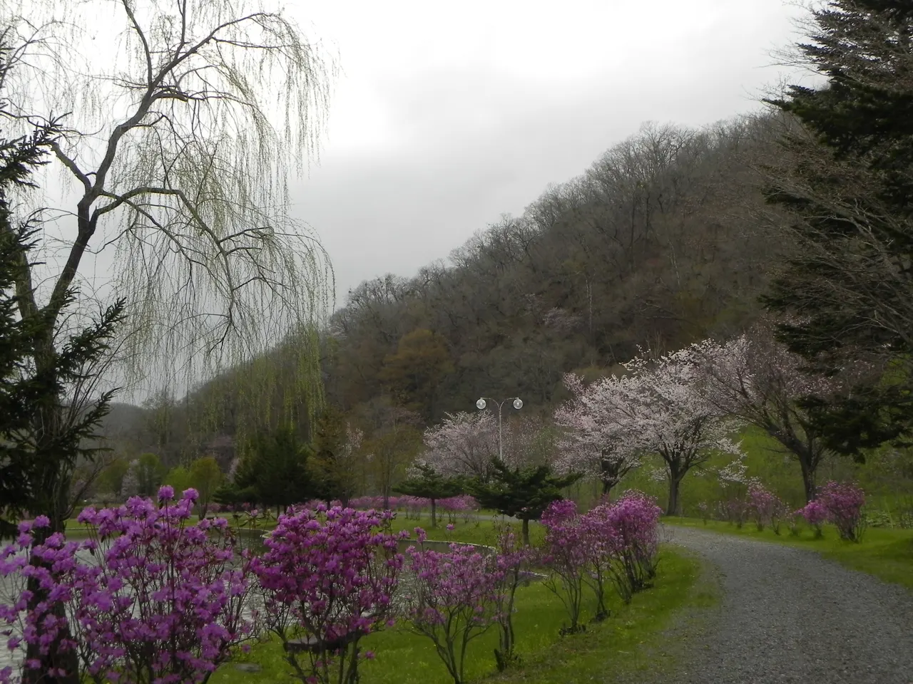
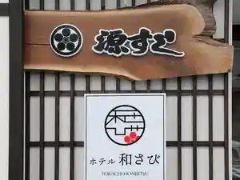
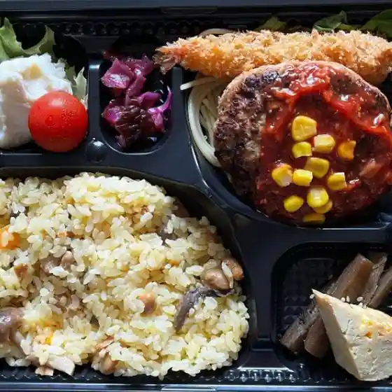
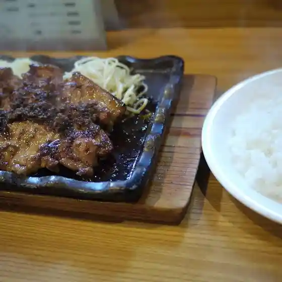
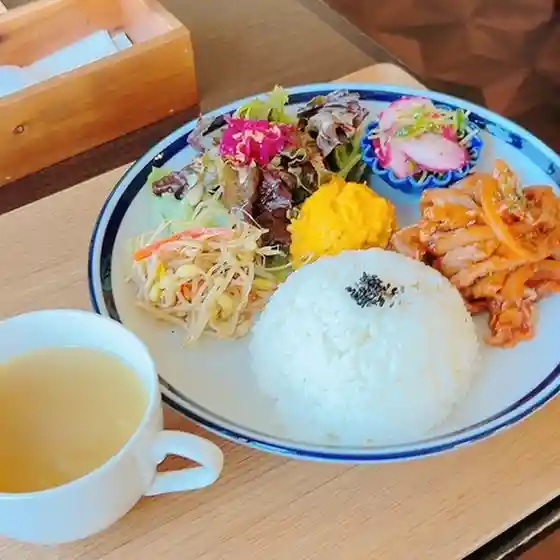
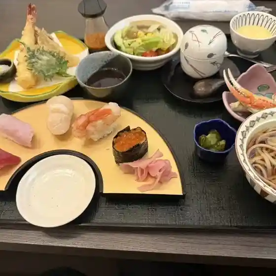
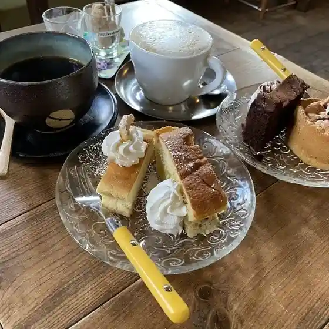
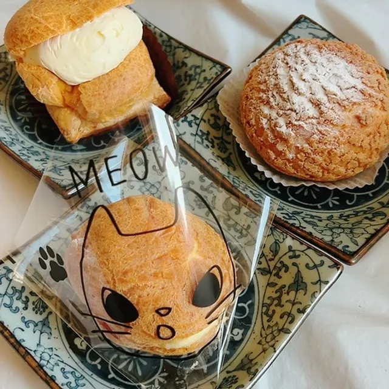
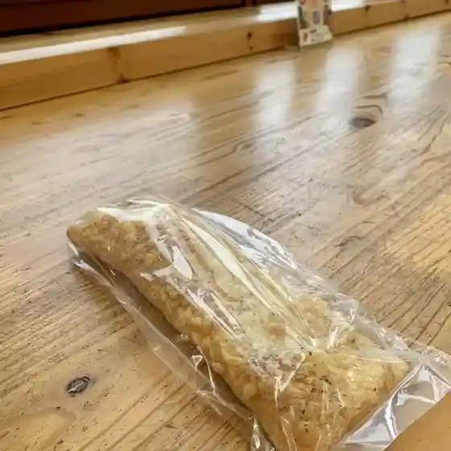

Honbetsu
Honbetsu · Hokkaido
Honbetsu
Highlighted on the Hokkaido map.

Stay
ホテル和さび

Hoteru Wasa Bi
Dining
ガーデニア

Gaadenia
お料理 いけ乃

O Ryouri Ike No
浮舟

Ukifune
kissa yuyuhi

Kissa Yuyuhi
源すし

Gen Sushi
エイチ・エス カフェカフェ

Eichi Esu Kafekafe
欧風ケーキ工房 かねもり

Oufuu Keeki Koubou Kanemori
アリコヴェール

Arikoveeru
＜焼肉・ジンギスカン＞豊寿園
Hojuen
ろうへるんはうす だいさく
Rouherunhausu Daisaku
呑み喰い処 おざわ
Nomikui Tokoro Ozawa
ブーランジェリー シュウ
Buuranjierii Shuu
cafeDABO
Cafedabo
ろぢうら食堂
Rojiura Shokudou
ラーメン 百番 本別店
Raamen Hyaku Ban Honbetsu Mise
酔月 はなれ
Sui Gatsu Hanare
岡女堂本家
Oka Onna Doumoto Ie
弓削旅館
Yuge Ryokan
北国
Kitaguni
からまつ
Karamatsu
俺が村
Ore Ga Mura
くり豆本舗
Kuri Mamehon Ho
鳥せい 本別店
Tori Sei Honbetsu Mise
セブンイレブン 本別町北店
Sebun'Irebun Honbetsu Machi Kita Mise